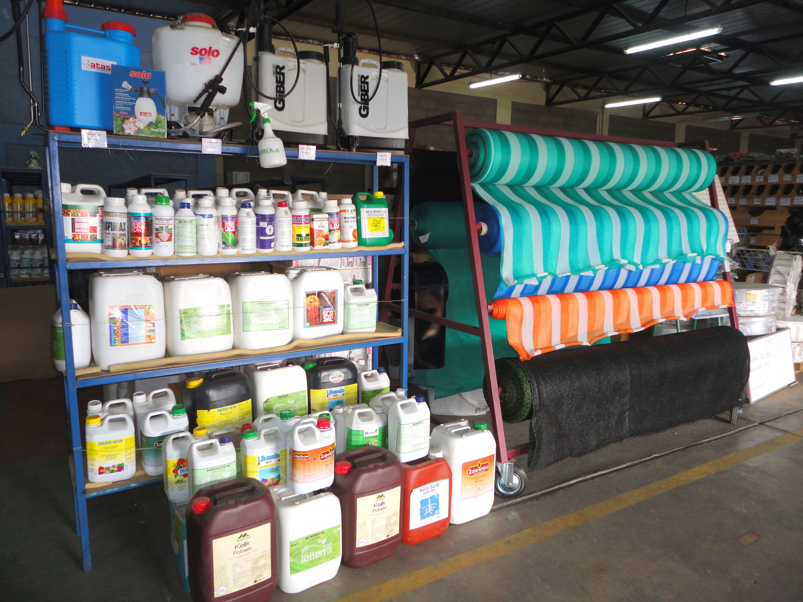
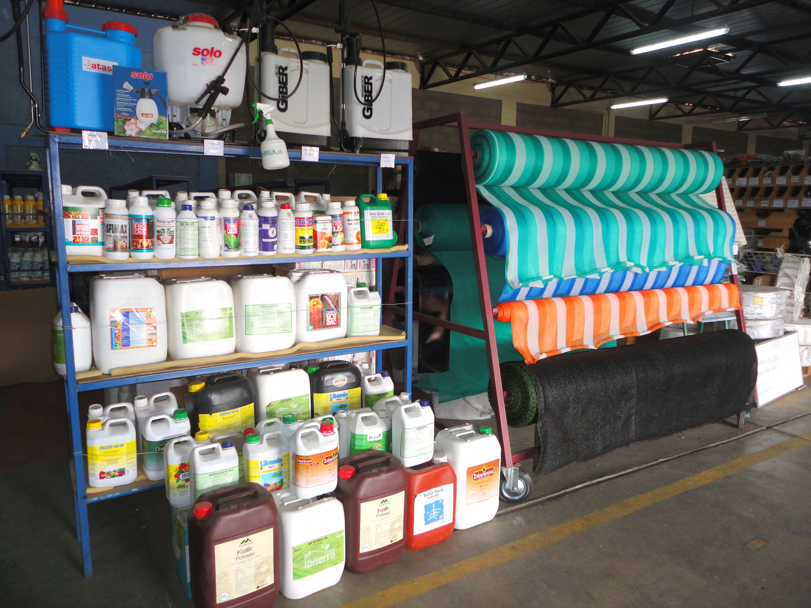

NUESTRA SALA DE VENTAS DE INSUMOS AGRÍCOLAS
OFRECE LOS SIGUIENTES PRODUCTOS:
● Semillas.
● Riego tecnificado.
● Malla antiafidos.
● Fitting (tubos pvc).
● Asesorías técnicas.
● Rollos de cintas de riego.
● Malla Rachel, plásticos mulch, etc.
● Bombas de agua y repuestos.
● Equipamiento de riego y accesorios.
● Herramientas y accesorios agrícolas.
● Plásticos para estanques e invernaderos.
● Productos Agroquímicos (insecticidas, Fungicidas, acaricidas, otros).
● Nutrición Vegetal (fertilizantes, bioestimulantes, abono foliares, otros).
 
